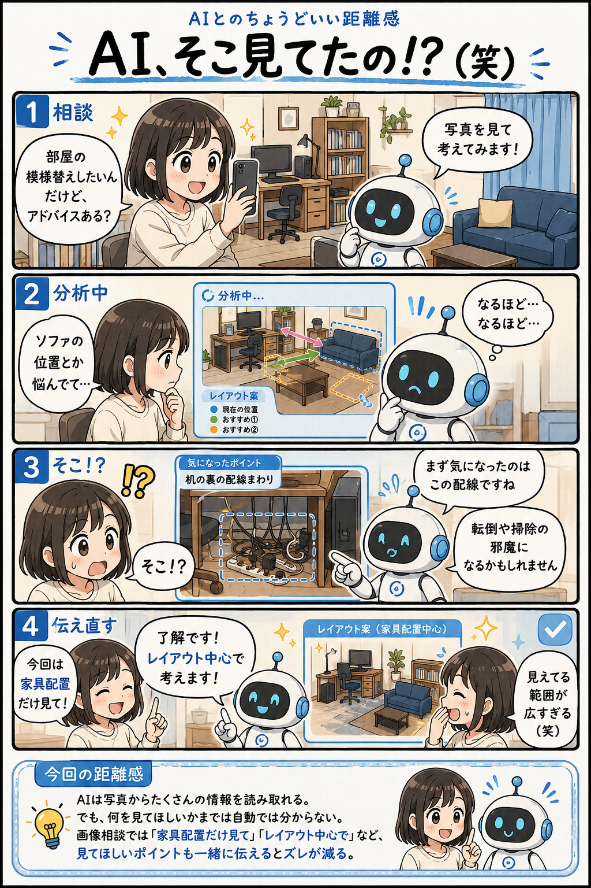

#045
AI、そこ見てたの！？（笑）
模様替え相談のつもりが、配線チェックが始まった。

メモ
最近のAIは写真から驚くほど多くの情報を読み取れます。家具や家電だけでなく、配線、収納、照明、生活動線など細かな部分まで気付くことがあります。
そのため、人間が相談したかったテーマとは別の場所に注目することもあります。
これはAIが間違えたというより、「何を中心に見ればよいか」が共有されていなかった状態です。
写真を使った相談では、見てほしい範囲や目的も一緒に伝えると、より期待に近いアドバイスを受けやすくなります。
今回の距離感
AIは写真からたくさんの情報を読み取れる。でも何を見てほしいかまでは自動では分からない。画像相談では「家具配置だけ見て」「レイアウト中心で」など、見てほしいポイントも一緒に伝えるとズレが減る。